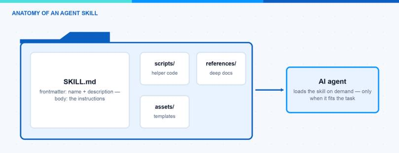
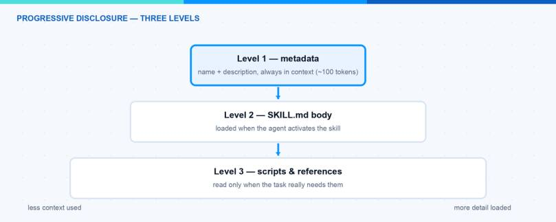

Every AI agent is only as good as the knowledge you give it. For a long time the common answer was to stuff everything into one giant system prompt. This does not scale. Agent Skills solve this problem in a much cleaner way. In this blog post I explain what Agent Skills are, why they beat the big system prompt, and how you can build your first skill step by step. At the end you will have a small working skill that runs in Claude Code and in many other AI tools.
What Are Agent Skills?
An Agent Skill is, at its core, just a folder. The folder contains one required file called SKILL.md and, if you want, extra scripts and reference documents. The SKILL.md file has two parts. A short YAML frontmatter tells the agent what the skill does and when to use it. The Markdown body tells the agent how to do the task. The agent only reads the frontmatter at startup. The rest is loaded on demand when a task matches.
The pattern was introduced by Anthropic for Claude in October 2025. Shortly after, in December 2025, Anthropic published it as an open standard at agentskills.io. Since then the adoption has moved very fast. Tools like OpenAI Codex, GitHub Copilot, Cursor and Gemini CLI support the same format today. This is the nice part: you write a skill once and you can reuse it across different agents.

Why Are Agent Skills Better Than a Big System Prompt?
The magic phrase is progressive disclosure. The idea is simple: give the agent only the information it needs right now, not everything at once. Agent Skills work in three levels:
- Metadata (about 100 tokens). At startup the agent loads only the name and the description of every installed skill. This is like the table of contents of a book.
- Instructions. When a task matches the description, the agent reads the full SKILL.md body. This is like opening one chapter.
- Resources. Scripts and reference files are loaded only when the agent really needs them. This is like the appendix at the end of the book.
Now compare this with a system prompt that carries every instruction for every possible task. The context window is limited, and every token costs money and attention. Even worse, instructions that are not relevant for the current task distract the model and make the results worse. With skills, a large reference document costs nothing until the moment the agent opens it.

How Is a Skill Structured?
The structure of Agent Skills is defined in the open specification and it is very small. A skill is a directory that contains at least a SKILL.md file:
The frontmatter of SKILL.md has only two required fields:
- name: Maximum 64 characters. Only lowercase letters, numbers and hyphens. It must match the folder name.
- description: Maximum 1024 characters. It should describe what the skill does and when the agent should use it.
There are also a few optional fields like license, compatibility and metadata. The body below the frontmatter is plain Markdown with no format restrictions. The specification recommends to keep SKILL.md under 500 lines and to move long details into separate reference files.
Note: The description is the most important line of the whole skill. The agent decides only based on this text if the skill is relevant for the current task. A description like “Helps with PDFs” is too vague. Write what the skill does and when to use it, and include the keywords a user would say.
How Can I Build My First Skill?
Let us build a small but useful example: a skill that turns raw meeting notes into clean meeting minutes. You do not need any framework for Agent Skills, only a text editor. I use Claude Code here, but the same folder works in every tool that supports the standard.
- Create the skill folder. In Claude Code, personal skills live in
~/.claude/skillsand project skills live in.claude/skillsinside the repository. Create a folder with the name of your skill:
- Create the SKILL.md file. Add the frontmatter with
nameanddescription, and write the instructions in the body:
-
Add a reference file (optional). Create
references/template.mdwith your output template. The agent will only load this file when it really creates the minutes. This keeps the main skill lean. -
Test the skill. Start a new agent session and give it a matching task, for example: “Can you turn these notes into meeting minutes?”. The agent sees the description, activates the skill and follows your instructions. If the skill does not trigger, sharpen the description with more concrete keywords.
-
Validate the skill (optional). The specification project provides a small reference tool that checks the frontmatter and the naming rules:
That is all. Your first skill is done. From here you can grow it: add a script to scripts/ for a step that should run as code, or split long instructions into more reference files.
Hint: Start small. One skill should solve one job. If your SKILL.md grows and grows, that is usually a sign that you should split it into two skills or move content into the references folder.
I wrote before about why CLI tools are beating MCP for AI agents. The core argument was context efficiency: MCP tool definitions eat a lot of the context window before the agent has done anything. For me, skills are the third piece of the same picture. CLI tools give the agent capabilities. MCP connects the agent to live services. Agent Skills package the knowledge and the workflows: how your team does things, which conventions apply, which steps to follow. If you want the full map of these building blocks, I put them together in my post about the AI tooling surface in 2026.
In this blog post I explained what Agent Skills are, why progressive disclosure beats a giant system prompt, and how you build your first skill with a simple SKILL.md file. Because the format is an open standard now, the skill you wrote today will very likely still work in the tools you use tomorrow. A good next step is the official Agent Skills documentation from Anthropic and the specification itself. I hope this is a little help.
Stay healthy, Cheers Jannik